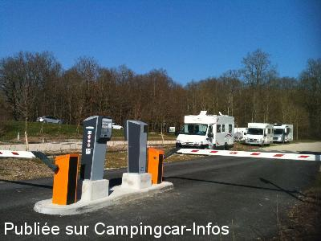
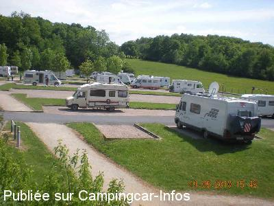
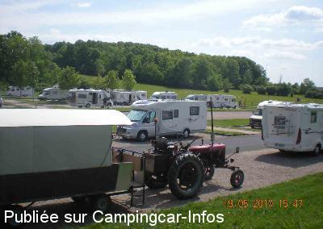

ASN = Aire de services avec stationnement nuit possible de :
GIFFAUMONT CHAMPAUBERT Lac du der
(N° 247)
Accès/adresse :
Chemin de la Cachotte
51290 GIFFAUMONT CHAMPAUBERT
51290 GIFFAUMONT CHAMPAUBERT
Latitude : (Nord) 48.55092° Décimaux ou 48° 33′ 3′′
Longitude : (Est) 4.76831° Décimaux ou 4° 46′ 5′′
Tarif : 2015
Stationnement 8 h à 20 h : gratuit
Stationnement 20 h à 8 h : 6 €
Eau et 45 m d'électricité : 2,50 €
Type de borne : Autre
Services :


Autres informations :

Le 20/03/2014 par TipTopCool du 55

Le 24/05/2010 par Michele.be

Le 24/05/2010 par Michele.be
de
gilles42
le 23/08/2015 :
De passage en Aout, il existe 2 parkings P1 et P5 qui correspondent aux 2 aires décrites de cette localité. ils sont tous les 2 gratuits en journée et payant de 20h à 8h: 6 euros.
les services se font à l'extérieur des parkings. le P5 et plus loin de la route, plus grand et peut recevoir les grands CCar.
ces 2 aires sont très bien, et à proximité du lac : belle ballades en vélo et à pied
De passage en Aout, il existe 2 parkings P1 et P5 qui correspondent aux 2 aires décrites de cette localité. ils sont tous les 2 gratuits en journée et payant de 20h à 8h: 6 euros.
les services se font à l'extérieur des parkings. le P5 et plus loin de la route, plus grand et peut recevoir les grands CCar.
ces 2 aires sont très bien, et à proximité du lac : belle ballades en vélo et à pied
de
lefevre guy
le 27/10/2014 :
Trės belle aire, trės bien rèalisée, calme,très près du lac et des commerces,6 € pour le stationement et 2,5€ pour les services C'est correcte il faut bien participer aux investissements effectuès pour les campings caristes par les communautés de communes
Cordialement guy
Trės belle aire, trės bien rèalisée, calme,très près du lac et des commerces,6 € pour le stationement et 2,5€ pour les services C'est correcte il faut bien participer aux investissements effectuès pour les campings caristes par les communautés de communes
Cordialement guy
de
Nath § Did
le 19/10/2014 :
même problème que le commentaire précédent, ce 18 oct 2014, nous ne sommes pas entrés sur l'aire car il semble qu'il n'est pas possible de payer pour en sortir, l'appareil n'acceptant ni carte de crédit, ni carte maestro. Cette aire et celle juste à côté n'acceptent elles que les cartes de banques françaises? Nous avons posés la question à l'office de tourisme qui n'a pas pu nous répondre...
même problème que le commentaire précédent, ce 18 oct 2014, nous ne sommes pas entrés sur l'aire car il semble qu'il n'est pas possible de payer pour en sortir, l'appareil n'acceptant ni carte de crédit, ni carte maestro. Cette aire et celle juste à côté n'acceptent elles que les cartes de banques françaises? Nous avons posés la question à l'office de tourisme qui n'a pas pu nous répondre...
de
jean et rose68
le 14/05/2014 :
§ nous avons passé la nuit sur cette aire le 9 mai dernier..2,50 euros pour 45 mn d'électricité ou 80 l d'eau , je trouve que c abusé , et 6 euros pour passer la nuit sur un terrain refait , mais pas possible d'être droit sans cales , et le lendemain matin bloqués 10 mn a la borne de sortie , cb refusée ,pas moyen de joindre un n° en cas de problème , merci a un campingcariste qui ns a dépanné . la question que je pose , comment ces 6 euros sont-ils débités sans devoir faire le n° de la cb ? on y réfléchira avant de revenir..
§ nous avons passé la nuit sur cette aire le 9 mai dernier..2,50 euros pour 45 mn d'électricité ou 80 l d'eau , je trouve que c abusé , et 6 euros pour passer la nuit sur un terrain refait , mais pas possible d'être droit sans cales , et le lendemain matin bloqués 10 mn a la borne de sortie , cb refusée ,pas moyen de joindre un n° en cas de problème , merci a un campingcariste qui ns a dépanné . la question que je pose , comment ces 6 euros sont-ils débités sans devoir faire le n° de la cb ? on y réfléchira avant de revenir..
de
Marmotte57
le 02/05/2014 :
De passage sur cette aire le 21 avril dernier, le parking est gratuit la journée et la nuit est à 6 euros. Les services coûtent 2.50 euros. Pour le wifi, le code est à demander à l'Office du tourisme. Très tranquille avec le chant des oiseaux pour réveil.
De passage sur cette aire le 21 avril dernier, le parking est gratuit la journée et la nuit est à 6 euros. Les services coûtent 2.50 euros. Pour le wifi, le code est à demander à l'Office du tourisme. Très tranquille avec le chant des oiseaux pour réveil.
de
NOEL52
le 26/02/2014 :
Travaux terminés aire ouverte tarif identiques à l'autre aire
Travaux terminés aire ouverte tarif identiques à l'autre aire
de
vivianne et françois de la Bougrière City
le 03/10/2012 :
Passés le 17 septembre - gratuité de l'aire - plusieurs possibilités pour stationner - des grands travaux sont en route pour créer une aire spécifique qui devrait être payante en 2013 - joli site pour des ballades à pieds et en vélo -
Passés le 17 septembre - gratuité de l'aire - plusieurs possibilités pour stationner - des grands travaux sont en route pour créer une aire spécifique qui devrait être payante en 2013 - joli site pour des ballades à pieds et en vélo -
de
fabien02
le 05/04/2011 :
bonjour nous avons passer un agreable week end le 2et3 avril 2011 sur cette aire qui et tres calme mais pas d'eau pour rincer le bac des vc a la borne mais je recommande cette aire
bonjour nous avons passer un agreable week end le 2et3 avril 2011 sur cette aire qui et tres calme mais pas d'eau pour rincer le bac des vc a la borne mais je recommande cette aire
de
michele.be
le 17/05/2010 :
Passé la nuit sur ce très grand parking plat très agréable, calme. Nous avons apprécié (9/10) et conseillons.
Passé la nuit sur ce très grand parking plat très agréable, calme. Nous avons apprécié (9/10) et conseillons.
de
Henri MAIN
le 17/04/2006 :
Ce stationnement signalé indépendamment de toute borne de services fait en réalité partie du site de GIFFAUMONT -CHAMPAUBERT qui regoupe à la fois:la borne de services ,le syndicat d'initiatives, les commerces, le port, l'école de voile, la plage, et 5 parkings autorisés aux camping-cars...
(Voir la présentation générale dans la fiche concernant l'aire de Giffaumont-Champaubert.)
Ce stationnement signalé indépendamment de toute borne de services fait en réalité partie du site de GIFFAUMONT -CHAMPAUBERT qui regoupe à la fois:la borne de services ,le syndicat d'initiatives, les commerces, le port, l'école de voile, la plage, et 5 parkings autorisés aux camping-cars...
(Voir la présentation générale dans la fiche concernant l'aire de Giffaumont-Champaubert.)